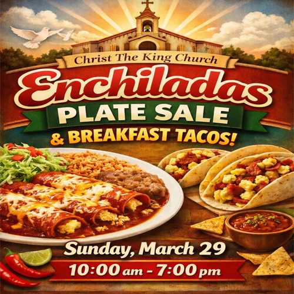

Próximos eventos destacados
Reemplaza estos textos de ejemplo por los eventos reales de la parroquia.

Domingo 29, 2026
10:00 AM
Venta de Platos de Enchiladas y Tacos de Desayuno
Vengan a probar nuestros deliciosos platos de enchiladas y tacos de desayuno.
Este Domingo
9:00 AM
Desayuno comunitario parroquial
Una cálida bienvenida después de la Misa: café, pan dulce y convivencia.
Este Domingo
9:00 AM
Desayuno comunitario parroquial
Una cálida bienvenida después de la Misa: café, pan dulce y convivencia.